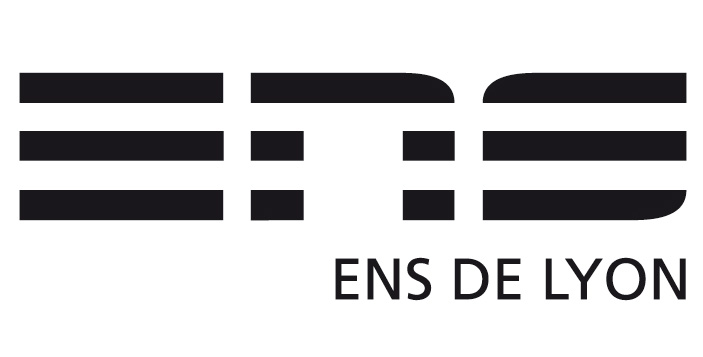
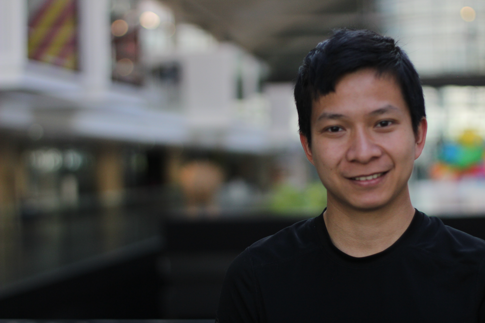

|
Hoang Trieu Vy LE 2025 –
I joined Beink Dream as a Senior Research Scientist in Paris, where I architect end-to-end agentic AI systems. I work on multiple challenging problems — from generative images with flow to building multi-modal systems that maintain a structured internal representation of scene state across 2D, 3D, and CAD modalities. 2024 – 2025
I was a Research Engineer at CEA – DIGITEO Labs in Saclay, where I worked on lightweight learning models for 3D CT reconstruction — building physics-consistent scene representations from sparse, noisy measurements and limited high-dimensional observations. 2020 – 2023
 My PhD at ENS Lyon was focused on variations of the Mumford-Shah functional for interface detection in degraded images, bridging proximal algorithms and unrolled deep architectures [take a look]. My advisers were Prof. Nelly Pustelnik and Dr. Marion Foare. Along the way I spent a year at UC Louvain (2020–2021) designing scalable accelerated algorithms for joint image restoration and edge detection on large-scale physics experiment images. I also taught Introduction to Machine Learning and Optimisation at EPITA, and Machine Learning & Optimization hands-on courses at ENS Lyon. 2015 – 2020
I studied at INSA Toulouse where I earned my Master of Engineering in Applied Mathematics, majoring in Mathematical Modelling and Numerical Analysis. |
 |
{kind=link}
My WorksWhat I build outside of papers — robots, agents and tools. Both of these are in active development.
Zingu
A two-wheeled self-balancing robot that gets back up on its own. An ESP32 inverted pendulum held upright by a cascaded PID controller — when it falls, it detects the fall, waits for the chassis to settle, and performs a wheel-torque kick-up to swing itself back into the balance envelope. Being knocked over is just another state, not an end condition.
Meepo
A personal AI assistant that is local, private and always on. Meepo goes beyond task execution: it keeps its own persistent brain — structured long-term memory, a personal knowledge store, and a sense of who you are — so it learns your context over time. Runs on local models, a self-hosted GPU server, or OpenAI and Anthropic if you prefer. |
PublicationsMy research spans unfolded neural networks, image processing, computer vision, and generative AI. |
{kind=link}
{kind=link}
{kind=link}
{kind=link}
{kind=link}
{kind=link}
{kind=link}
Ph.D Thesis |
{kind=link}
Talks |
|
EUSIPCO, Belgrade, Serbia, Aug 2022
Conference on Digital Geometry and Discrete Variational Calculus, Mar 2021 |
Teaching |
|
Introduction to Machine Learning and Optimisation, EPITA
Machine Learning and Optimization hands-on courses at ENS Lyon |